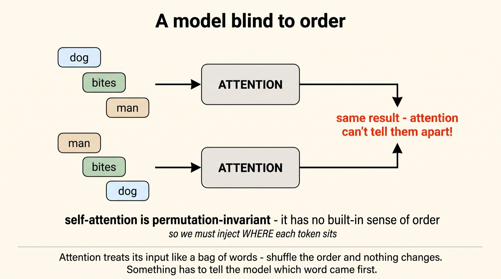
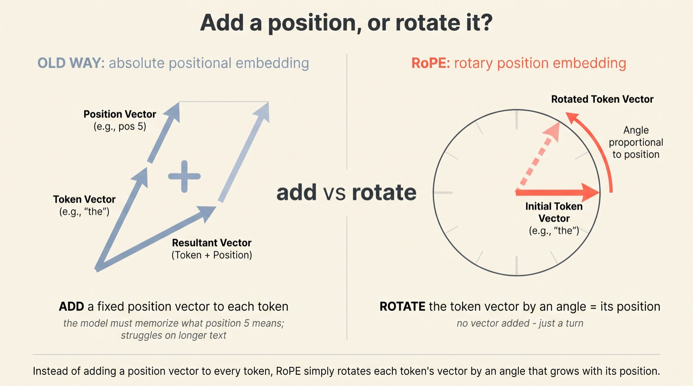
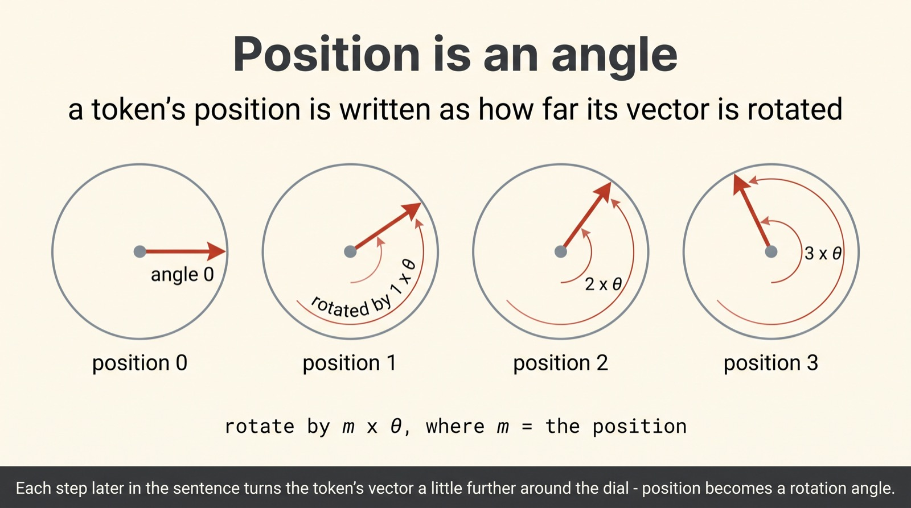
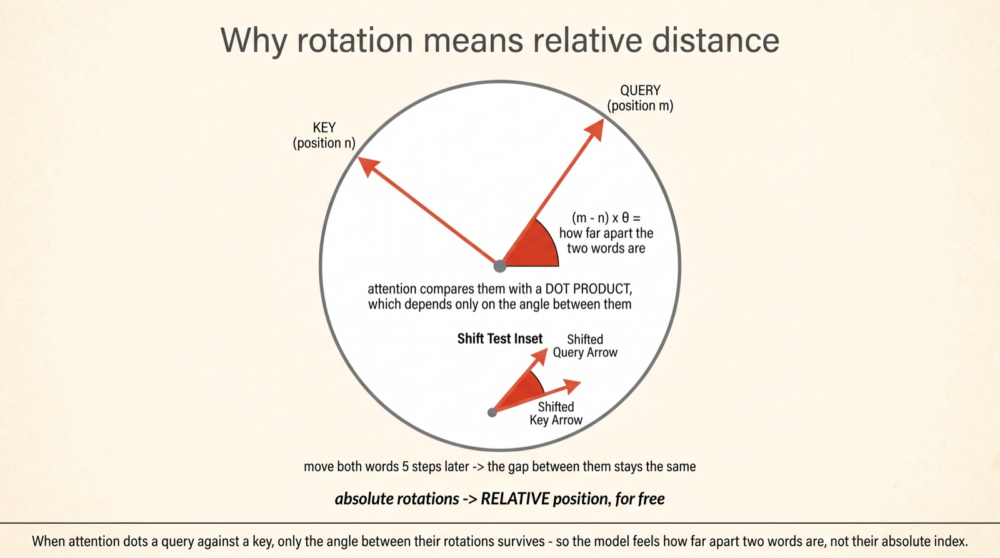
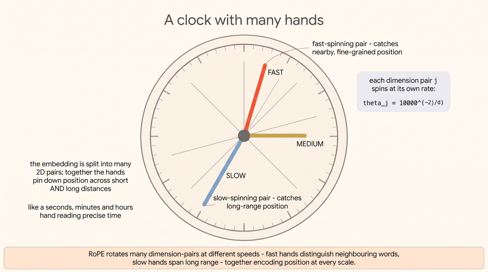
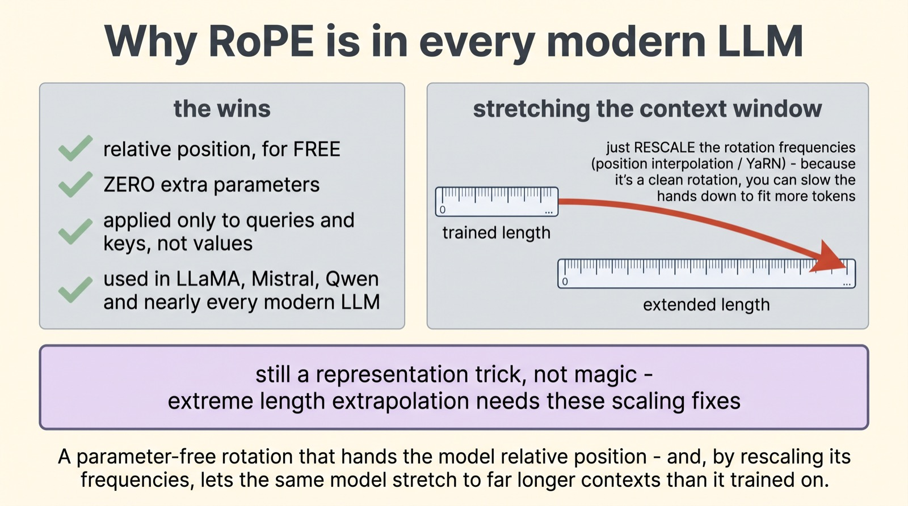

RoPE: how a transformer knows which word came first
Position is a
rotation
Strip a transformer down and you find a surprising blind spot: by itself, attention has no idea what order the words came in. The fix that nearly every modern model now uses is quietly beautiful. It doesn't tag each word with its position — it rotates each word's vector by an angle that grows with where it sits. And from that single rotation, relative distance falls out for free.
Rotary Position Embeddings — RoPE — were introduced by Jianlin Su and colleagues in the 2021 RoFormer paper, and have since become the default in LLaMA, Mistral, Qwen and almost every model you use. The idea: turn position into a rotation angle, so that when attention takes a dot product, only the relative angle between two tokens survives. We'll build it from the ground up.
Scroll to begin.
↓
A model blind to order
Here's a fact that trips up almost everyone the first time they meet it: the attention mechanism at the heart of a transformer doesn't care about word order. Feed it "the dog bit the man" or "the man bit the dog" and, on its own, it computes the very same thing. To attention, a sentence is a bag of words — a set, not a sequence.
The reason is mathematical. Attention works out how much each token should pay attention to each other token, purely from the tokens' content. Shuffle their order and every pairwise relationship is unchanged. The technical word is permutation-invariant: rearrange the inputs and the machinery doesn't notice. Useful for some things — disastrous for language, where "dog bites man" and "man bites dog" are rather different news stories.

So every transformer needs an extra ingredient: a way to inject position — to tell the model where each token sits in the sequence. The question is how. The first answers were reasonable but clunky. RoPE's answer is the elegant one, and it starts by rejecting the obvious move.
Add a position, or rotate it?
The obvious way to add position is, well, to add it. The original transformers and models like GPT-3 used absolute positional embeddings: build a little vector that means "I'm at position 5," and add it onto the token's embedding. Each slot in the sequence gets its own vector, stirred into the word.
It works, but it has a clumsy feel. The model has to memorise what each absolute position "means," and those meanings don't stretch gracefully — train on sentences up to 2,000 tokens and the model has simply never seen what position 9,000 is supposed to feel like. RoPE makes a different move. Instead of adding a position vector, it rotates the token's vector by an angle that depends on its position. Same goal, completely different geometry.

That swap — from adding to rotating — sounds like a small aesthetic preference. It isn't. Rotation has a mathematical property that adding lacks, and that property is the whole reason RoPE won. To see it, we first need to look at what a single rotation actually does.
Position is an angle
Take a token's vector and, for a moment, look at just two of its numbers as a little arrow on a dial — a point with a direction. RoPE's rule is almost childishly simple: the further along in the sentence a token sits, the more you spin that arrow.
A token at position 0? No rotation — leave the arrow where it is. Position 1? Rotate it by one step, an angle we'll call θ. Position 2? Rotate by 2θ. Position 7? 7θ. The position is written directly into the angle of the vector — the same word, sitting in three different spots, points in three different directions.

On its own that's just a tidy way to label position. The brilliance only appears when two of these rotated vectors meet — which is exactly what happens, billions of times, inside attention.
Why rotation means relative distance
Attention's core operation is the dot product: to decide how much a query token at position m should attend to a key token at position n, it multiplies their vectors together. And here is the elegant fact RoPE was built around: the dot product of two arrows depends only on the angle between them.
So if the query has been rotated by m·θ and the key by n·θ, the angle between them is (m−n)·θ — and the attention score depends only on that gap. Not on where either word sits in absolute terms, but on how far apart they are. Slide the whole sentence five words later and both arrows rotate by the same extra amount; the angle between them doesn't budge, so the score is unchanged.

This is the trick that absolute embeddings couldn't pull off. By encoding position as an absolute rotation, RoPE makes attention see relative position — for free, with no extra parameters, no lookup table of "what position 5 means." Relative distance is usually what language actually cares about, and RoPE hands it over as a side effect of geometry.
A clock with many hands
One spinning arrow can't encode position very precisely — rotate far enough and it wraps back around, ambiguous. RoPE's fix is to use not one dial but many, each spinning at a different speed. The token's embedding is carved into lots of 2D pairs, and every pair is a hand turning at its own rate.
Some hands spin fast — they whip around with every step, so they're exquisitely sensitive to small, local shifts in position (is this word right next to that one?). Others spin slow, barely creeping around the dial, so they only change meaningfully across long distances — they carry the coarse, long-range sense of where you are. The rotation rates follow a fixed schedule, θⱼ = 10000−2j/d, fanning out from fast to slow.

It's the same idea a clock uses. A second hand alone can't tell you the hour; an hour hand alone can't tell you the second. Together, fast and slow hands pin down the moment exactly. RoPE's bank of frequencies does the same for a token's place in a sequence — precise at every scale at once.
Why RoPE is everywhere
Add it all up and you see why RoPE swept the field. It hands the model the thing it actually wants — relative position — as a free consequence of geometry. It adds zero parameters. It touches only the queries and keys, leaving the values untouched. And it slots into any attention variant without fuss.
But the property that turned out to matter most in the long-context era is this: because position is a clean rotation, you can rescale the rotation speeds to fit more tokens than the model ever trained on. Slow every hand down by the right factor and a model trained on a few thousand tokens can be stretched to hundreds of thousands — the trick behind position interpolation and YaRN, and a big part of how the million-token models we've covered came to be. Be honest about the limit, though: it's an elegant encoding, not magic. Push the length too far without these scaling fixes and the rotations blur into noise.

Why this matters
It's easy to skip past positional encoding as a footnote — a small wiring detail next to the grand drama of attention and scale. But RoPE is a perfect little lesson in how the best ideas in this field tend to look: not a bigger hammer, but a change of representation that makes a hard thing fall out for free.
The hard thing was relative position. The clumsy approach bolted it on with extra vectors and extra parameters. RoPE noticed that if you encode position as a rotation, the dot product at the heart of attention does the work for you — relative distance simply appears, because that's what angles between rotated vectors are. Nothing added; everything gained.
So the next time you read that a model handles a million tokens, you'll know part of the quiet machinery underneath: a token's place in the sequence, written not as a label but as a turn of a dial — many dials, at many speeds — chosen precisely so the only thing the model ever feels is how far apart its words are.